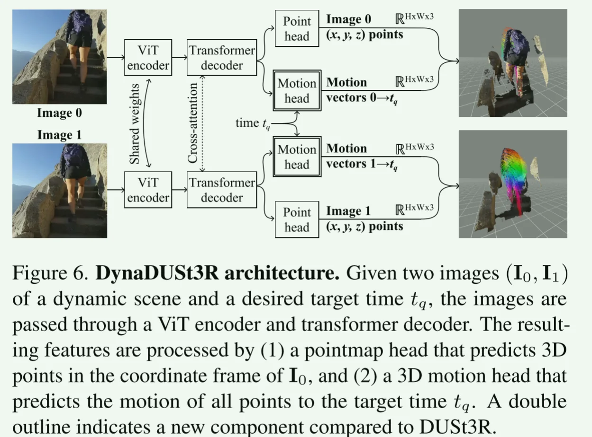
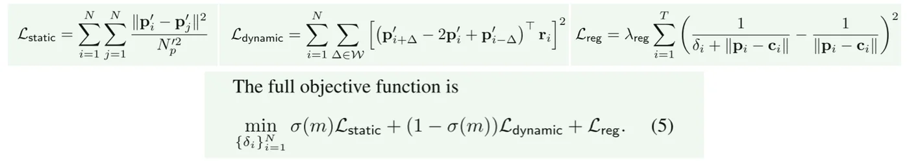
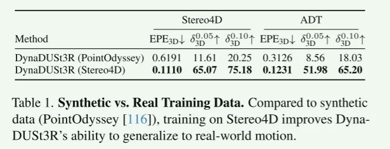
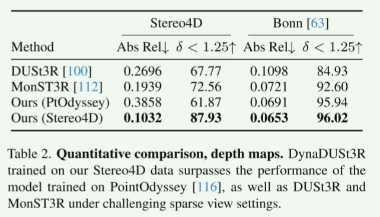

- [[#Stereo4D: Learning How Things Move in 3D from Internet Stereo Videos]]
- [[#pipeline]]
- [[#1. Introduction]]
- [[#2. Method]]
- [[#2.1 Data Processing (Stereo4D)]]
- [[#2.2 DynaDUSt3R model]]
- [[#3. Experiments]]
- [[#4. Discussion]]
pipeline
- 从 VR180 立体视频自动挖掘可度量的 4D 数据集（动态点云与长时程三维轨迹）；

- 基于 DUSt3R 的动态版 —— DynaDUSt3R，从两帧图像预测三维结构 + 三维运动（可查询任意中间时刻）。
1. Introduction
Question: 在 没有人工标注 & 昂贵设备 情况如何获得大规模、真实的4D监督？并训练image pair 范式的 4DR 模型？
Idea:
VR180 立体视频 \(\to\)
camera poses, dense depth maps, and 2D motion trajectories \(\to\)
提升到世界坐标系的三维点轨迹（==类似 Mosca==）\(\to\)
pseudo-metric point clouds with long-term 3D motion trajectories (==Stereo4D Dataset==) \(\to\)
DUSt3R + Dynamic Head \(\to\) ==DynaDUSt3R== \(\to\) 点云 + 场景流到任意查询时刻 \(t_q\) 的预测
Pseudo-metric：经对齐后近似度量尺度的三维结果（非严格真值但足以用于训练）。
2. Method
2.1 Data Processing (Stereo4D)
- VR180 立体视频 \(\to\) 分镜（SLAM 分段） \(\to\) 每镜头运行类似 COLMAP 的增量SfM（优化位姿/基线）；
- 对校正后的双目视频逐帧计算==视差== ==\(D_i\)==（RAFT）;
- 用 BootsTAP 提取 ==long-term 2D trajectories==；
- 2D track \(\to\) 利用位姿 & 视差 \(\to\) 3D track （per-point {\(p_j^i\)}）；
- 静 + 动 + 正则，抑制射线方向抖动、提升时序一致；

- 过滤低质片段/转场/无纹理 \(\to\) Stereo4D Dataset（>100k clips）。
2.2 DynaDUSt3R model
- 采样视频，选两帧 \(I_0, I_1\)（Δ≤60 帧）与查询 \(t_q\)；
- 前向：
- Encoder/Decoder \(\to\) Point Head: \(P_0,P_1,C^{point}\)；
- Motion Head(+\(PE[t_q]\)): \(M_{0→tq},M_{1→tq},C^{mot}\)；
- 计算 \(L_{point}, L_{motion}\)（尺度归一 + 置信加权），反传更新；
- Infer：预测任意 \(t_q\) 运动
3. Experiments


4. Discussion
双帧回归
limitation：
- 数据形成依赖光流和 2D track 的准确性，对长时间遮挡和较远区域效果不好；
- DynaDUSt3R 非生成且只有两帧输入，可以 加全局优化 or 生成先验来建模模糊运动，从而扩展到视频输入。